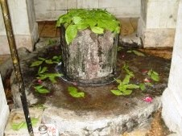
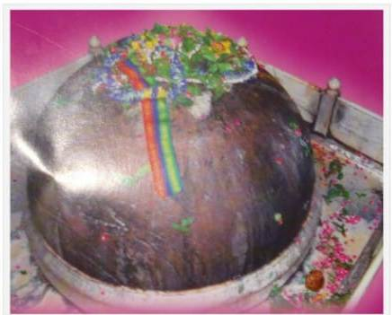

<?xml version="1.0" encoding="UTF-8"?><rss version="2.0"
	xmlns:content="http://purl.org/rss/1.0/modules/content/"
	xmlns:wfw="http://wellformedweb.org/CommentAPI/"
	xmlns:dc="http://purl.org/dc/elements/1.1/"
	xmlns:atom="http://www.w3.org/2005/Atom"
	xmlns:sy="http://purl.org/rss/1.0/modules/syndication/"
	xmlns:slash="http://purl.org/rss/1.0/modules/slash/"
	>

<channel>
	<title>Vibhandeshwar &#8211; Varanasi Temples</title>
	<atom:link href="index.html" rel="self" type="application/rss+xml" />
	<link>../../../../../index.html</link>
	<description>Temples of Varanasi as referred to in Kashi Khand</description>
	<lastBuildDate>Thu, 19 Jun 2025 05:16:46 +0000</lastBuildDate>
	<language>en-US</language>
	<sy:updatePeriod>hourly</sy:updatePeriod>
	<sy:updateFrequency>1</sy:updateFrequency>
	<generator>https://wordpress.org/?v=4.6.29</generator>
	<item>
		<title>VIBHANDESHWAR</title>
		<link>../../../../../shiva-temples/vibhandeshwar/index.html</link>
		<pubDate>Tue, 11 May 2010 06:53:35 +0000</pubDate>
		<dc:creator><![CDATA[admin]]></dc:creator>
				<category><![CDATA[Other Shiva Temples (S-Y)]]></category>
		<category><![CDATA[Shiva Temples]]></category>
		<category><![CDATA[Vibhandeshwar]]></category>
		<category><![CDATA[ayyappa]]></category>
		<category><![CDATA[bhand]]></category>
		<category><![CDATA[til bhandeshwar]]></category>
		<category><![CDATA[tilbhandeshwar]]></category>
		<category><![CDATA[vibhandeshwar]]></category>
		<category><![CDATA[vibhandeshwar temple]]></category>

		<guid isPermaLink="false">../../../../../p=466.html</guid>
		<description><![CDATA[Kashi Khand, Chapter 97 mentions various Shiv Lings all around Kashi. Among various Lings, Kashi Khand mentions one important Shiv Ling named Vibhandeshwar. Devotees who worship this Ling will derive all the fruits of staying in Kashi. They will attain Moksha. (VIBHANDESHWAR) LOCATION OF VIBHANDESHWAR Vibhandeshwar is located at B-17/42, Til Bhandeshwar.  Devotees can travel [&#8230;]]]></description>
				<content:encoded><![CDATA[<p>Kashi Khand, Chapter 97 mentions various Shiv Lings all around Kashi.</p>
<p>Among various Lings, Kashi Khand mentions one important Shiv Ling named Vibhandeshwar. Devotees who worship this Ling will derive all the fruits of staying in Kashi. They will attain Moksha.</p>
<p></p>
<p style="text-align: center;"><strong>(VIBHANDESHWAR)</strong></p>
<p><strong><span style="text-decoration: underline;">LOCATION OF VIBHANDESHWAR</span></strong></p>
<p>Vibhandeshwar is located at B-17/42, Til Bhandeshwar.  Devotees can travel upto Til Bhandeshwar (Pandey Haveli) by cycle rickshaw.  This is a famous temple.  While Vibhandeshwar is a big Ling situated under the ground level, there is a huge Ling known as Til Bhandeshwar which is worshipped with all fervour by the local population.  It is believed that the Ling grows by the size of one Til (sesame seed) per year.</p>
<p></p>
<p style="text-align: center;"><strong>(TIL BHANDESHWAR)</strong></p>
<p>It is worth mentioning that the only Ayyappa Temple in Kashi is located in the temple premises of Til Bhandeshwar.</p>
<p><strong><span style="text-decoration: underline;">TYPE OF POOJA</span></strong></p>
<p>Til Bhandeshwar temple is open from 04.00 a.m. to 10.00 p.m. and remains closed from 04.00 p.m. to 08.00 p.m.  Aarties are held in the morning and evening.  However, Vibhandeshwar Ling is open for darshan throughout.</p>
<p>&nbsp;</p>
]]></content:encoded>
			</item>
	</channel>
</rss>
